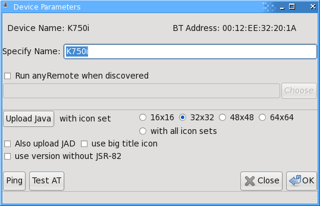

Event reporting ...
Definition
Mobile Equipment Event Reporting functionality means what cell phone is able to send the unsolicited result codes for key presses, display changes, and indicator state changes.
How to check with GUI
If You have installed anyRemote GUI, then descend to Properties->Device Browser and double click on Your device.
In Device Detail window push Test AT
and inspect operation results in status line of the Device Detail window.
How to check manually (obsoleted)
Bluez 4.X and newer does not allow to directly connect to RFCOMM device
It is possible to test Mobile Equipment Event Reporting functionality manually. The step-by-step description below
Run terminal emulator (Minicom or cu) and establish connection with the phone. For example:
- Bluetooth
cu -l /dev/rfcomm0 -s 19200 - InfraRed
cu -l /dev/ircomm0 -s 19200 - Cable
cu -l /dev/ttyACM0 -s 19200
It should answer:
Connected
Enter AT or ATZ and get answer "OK"
AT OK
Enter AT+CMER=? and get something like:
AT+CMER=? +CMER: (0,3),(0,1,2),(0),(0,1,2),(0) OK
or just
AT+CMER=? ERROR
If You got "ERROR" on "AT+CMER=..." it seems Your cell phone will not work with anyRemote in AT-mode. Try to use Server-mode.
Also, it seems your phone does not support event reporting for key presses if answer looks like (second item is "(0)"):
+CMER: (0,3),(0),(0),(0,1,2),(0)
Now it is the time to determine exact format of "AT+CMER=x,x,x,x,x" command
In general:
- SonyEricsson phones use
AT+CMER=3,2,0,0,0 - Motorola phones use
AT+CMER=3,1,0,0,0 - Siemens phones use
AT+CMER=3,2,0,0,0 - Sagem phones use
AT+CMER=2,1,0,0,0
So, enter, say AT+CMER=3,1,0,0,0 and get OK,then press button "1" on the phone keyboard. You should in terminal emulator see something like:
+CKEV: "1",1 +CKEV: "1",0
or
+CKEV: 1,1 +CKEV: 1,0
Try to find a variant of "CMER=..." command which will work fo You.
Seems command which disables event reporting feature is similar for all phones (at least for Motorola, Siemens, Sagem and SE), it is
CMER=3,0,0,0,0
The value You have found should be specified in the configuration file. anyRemote will try to determine the model of the phone upon connecting, and can use predefined "CMER=..." commands for Motorola, Sagem, Siemens and SE phones.
At the end, it is a good idea to create a "dictionary" of key codes.
One-by-one press all keys on the phone keyboard and inspect corresponding +CKEV codes in terminal emulator window. That codes will be used in the configuration file. There exist such files for SE, Motorola, Siemens, Benq-Siemens and Sagem phones. That files could be found in the keymaps/ directory.